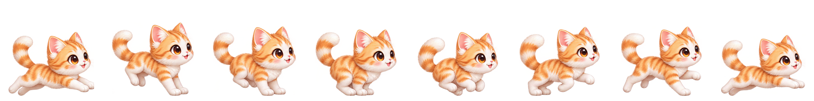
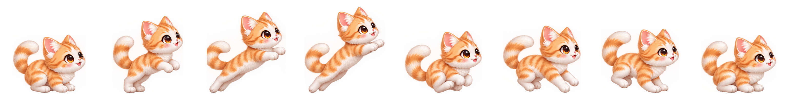
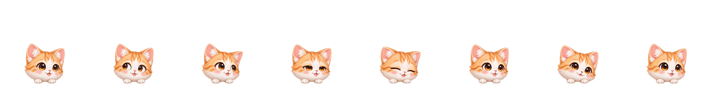
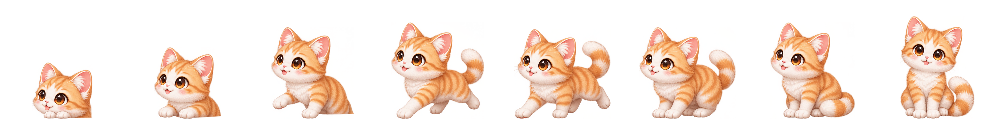

01 · 奔跑
伸展 → 前爪着地 → 收腿 → 后腿蹬地 → 腾空

8 帧 · 480 ms 循环 · 提醒去程使用02 · 跳跃
蓄力 → 蹬地 → 伸展起跳 → 收腿腾空 → 前爪落地

8 帧 · 提醒返程 650 ms 播放一次 · 此处慢放循环03 · 躲进桌角
转身 → 迈步 → 压低身体 → 收腿 → 缩到只露脸
04 · 探头待机
好奇张望 → 左右看 → 眨眼 → 歪头

8 帧 · 1920 ms 循环 · 躲藏时只露头05 · 跑出来坐下
抬头 → 伸出前腿 → 小跑 → 停步 → 坐稳

8 帧 · 800 ms · 鼠标悬停展开时使用